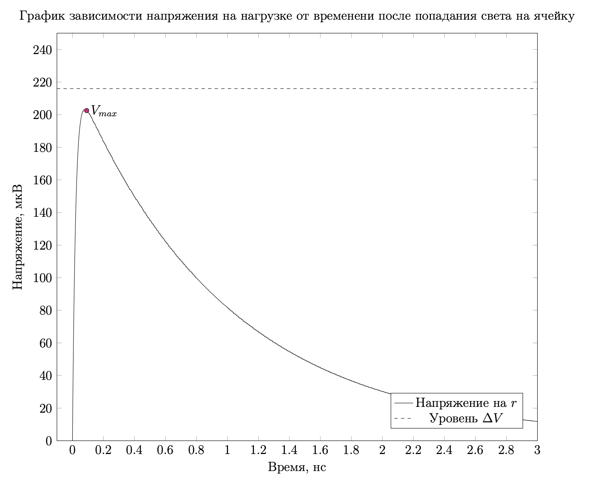
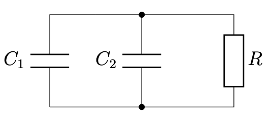

Silicon photomultiplier tube --- Solution
Y23 (2023) — English translation
A1For steady state, find: voltage $V_r$ at load $r$; voltage $V_0$ on each cell and parasitic capacitance $C_0$; voltage $V_1$ on the damping layers of each cell.0.40
For steady state, find:
In steady state, no current flows through $r$, so $V_r = 0$. The voltage on the cells coincides with the source voltage, that is, $V_0 = V_{op}$. The capacitor $C_1$ is parallel to the resistor, so it is discharged: $V_1 = 0$.
Answer: $$V_r = 0$$$$V_0 = V_{op}$$$$V_1 = 0$$
A2Find: change in charge $\Delta{q}_0$ of capacitor $C_0$. Express your answer using $C_0$ and $\Delta{V}$; changes in charges $\Delta{q}_{1a}$ and $\Delta{q}_{2a}$ of capacitors $C_1$ and $C_2$, respectively, of each of the active cells. Express your answers using $C_1$, $C_2$, $V_{ov}$ and $\Delta{V}$; changes in charges $\Delta{q}_{1p}$ and $\Delta{q}_{2p}$ of capacitors $C_1$ and $C_2$, respectively, of each of the passive cells. Express your answers using $C_{cell}$ and $\Delta{V}$.0.80
Find:
By definition of capacity: $\Delta q_0 = C_0\Delta V$. The charge change on capacitors in active cells is similar: $\Delta q_{1a} = C_1(V_{ov} + \Delta V)$ and $\Delta q_{2a} = -C_2 V_{ov}$, and in passive cells: $\Delta q_{1p} = \Delta q_{2p} = C_{cell} \Delta V$.
Answer: $$\Delta q_0 = C_0\Delta V$$$$\Delta q_{1a} = C_1(V_{ov} + \Delta V)$$$$\Delta q_{2a} = -C_2 V_{ov}$$$$\Delta q_{1p} = \Delta q_{2p} = C_{cell} \Delta V$$
A3Find the change in voltage $\Delta{V}$ across the cells and capacitor $C_0$ upon completion of the avalanche process. Express your answer in general terms through $V_{ov}$, $n$, $N$, $C_1$, $C_2$, $C_0$.0.70
Let us write down the charge conservation law for positive plates $C_0$ and $C_1$. $$n\Delta q_{1a} + \Delta q_0 + (N-n)\Delta q_{1p} = 0$$$$n C_1(V_{ov} + \Delta V) + C_0\Delta V + (N-n)C_{cell} \Delta V = 0$$$$\Delta V (nC_1 + C_0 + (N-n)C_{cell}) = - nC_1 V_{ov}$$$$\Delta V = -\cfrac{ nC_1 V_{ov}}{nC_1 + C_0 + (N-n)\cfrac{C_1 C_2}{C_1 + C_2}}$$
Answer: $$\Delta V = -\cfrac{ nC_1 V_{ov}}{nC_1 + C_0 + (N-n)\cfrac{C_1 C_2}{C_1 + C_2}}$$
A4Estimate the amplitude of thermal noise across the load $r=50~\text{\Omega}$ at room temperature if the oscilloscope bandwidth is $1~\text{GHz}=10^9~\text{Hz}$. Using the data from the problem statement and the formula you obtained from A3, find the numerical value of $\Delta{V}$ when light hits one cell. Conclude whether the signal from one cell can be distinguished against the background of thermal noise of the load resistance.0.60
Substitute $T = 300 \text{K}$ and get: $V_{noise} = 2.88\cdot10^{-5} \text{V}$. Let us express the change in voltage through the data in terms of magnitude: $$\Delta V = -\cfrac{(k+1)(1-p)\cfrac{n}{N}V_{ov}}{1 + \cfrac{kn}{N}(1-p)}$$Substituting $n = 1$ and we get: $$\Delta V = -2.16\cdot10^{-4} \text{V}$$Note that $\Delta V$ по модулю заметно больше $V_{noise}$, so the signal can be distinguished.
Answer: $$V_{noise} = 2.88\cdot10^{-5} \text{V}$$$$\Delta V = -2.16\cdot10^{-4} \text{V}$$$\Delta V$ is noticeably larger in absolute value than $V_{noise}$, so the signal can be distinguished.
B1Find the multiplication coefficient $M$ for the TFU with the parameters from the problem statement. Express your answer in terms of $N$, $C_1$, $C_2$, $C_0$, $e$, $V_{ov}$ and give a numerical value.0.80
$Q$ can be determined through the change in charges on the negative plates $C_0$ and $C_2$. $$Q = - C_0 \Delta V - (N - 1)C_{cell} \Delta V + C_2 V_{ov}$$$$M =\left( (C_0 + (N-1)C_{cell})\cfrac{ C_1 V_{ov}}{C_1 + C_0 + (N-1)C_{cell}} + C_2 V_{ov}\right)\cdot\cfrac{1}{e}$$$$M = 32.4\cdot10^3$$
Answer: $$M =\left( \left(C_0 + (N-1)\cfrac{C_1 C_2}{C_1 + C_2}\right)\cfrac{ C_1 V_{ov}}{C_1 + C_0 + (N-1)\cfrac{C_1 C_2}{C_1 + C_2}} + C_2 V_{ov}\right)\cdot\cfrac{1}{e}$$$$M = 32.4\cdot10^3$$
C1Let's consider a pulse recorded by an oscilloscope after light hits one cell. We will assume that the pulse duration is short enough to neglect the current flowing through the leakage resistance $R$, but large enough so that the avalanche process is completed and all switches $K_i$ are open. In this approximation, the circuit can be replaced by an equivalent series $RLC$ circuit. Specify its parameters.0.40
Answer: Resistance $r$, inductance $L$ and capacitance $C_{det}$
C2Estimate the quality factor of the resulting $RLC$ circuit. Will oscillations occur in this circuit?0.30
Answer: Let's use the usual formula for the quality factor of an oscillatory circuit: $$Q = \cfrac{1}{R}\sqrt{\cfrac{L}{C}} = 0.14$$The resulting value is much less than 1, which means that oscillations will not occur in this circuit.
C3Qualitatively depict a graph of the load voltage versus time after light hits one of the cells. Initially, the circuit was in steady state. It is not necessary to indicate characteristic values.0.30

C4Compare the maximum absolute value of the voltage at the load $|V_{max}|$ after light hits one of the cells and the value $|\Delta{V}|$ found earlier. Which of these quantities is greater? Circle the correct ratio on your answer sheet.0.20
The voltage across the resistor will always be less than the initial voltage of the capacitor.
Answer: $$|V_{max}| < |\Delta V|$$
D1Find the approximate dependence of the voltage on the cell's damping layer on time after light hits it (under initial steady-state conditions). Take advantage of the fact that in the conditions of this problem $\Delta{V}\ll{V_{ov}}$, $R\gg{r}$. Consider that a lot of time has passed and the voltage on the external load is almost zero. Express your answer in terms of $V_{ov}$, $R$, $C_1$, $C_2$, $t$.1.00
Due to the data relationships in the condition, the voltage at $r$ and $L$ can be neglected. That is, for the restoration process the cell is equivalent to an RC circuit.
Initially the voltage at $C_1$ is $V_{ov}$. Then time dependence: $$V_1 = V_{ov}\cdot e^{-\cfrac{t}{R(C_1 + C_2)}}$$
Answer: $$V_1 = V_{ov}\cdot e^{-\cfrac{t}{R(C_1 + C_2)}}$$

D2Find the change in voltage $\Delta{V}$ across capacitor $C_0$ when light hits one ($n=1$) of the unrecovered cells, the voltage on the quenching layer of which was $V_10.50
The answer can be obtained in a similar way to part A, but now the change in voltage by $C_2$ will be $V_{ov} - V_1$ instead of just $V_{ov}$.
Answer: $$\Delta V = -\cfrac{ C_1( V_{ov} - V_1)}{C_1 + C_0 + (N-1)\cfrac{C_1 C_2}{C_1 + C_2}}$$
E1Let $p(t)$ be the probability that during time $t$ the cell did not fire even once. Find $p(t + dt)$, express the answer in terms of $p(t)$, $dt$, $T$. Consider that $dt \ll T$.0.30
The probability that the cell will not work in time $dt$ is $1 - \cfrac{dt}{T}$, therefore: $$p(t+dt) = p(t) \cdot\left(1 - \cfrac{dt}{T}\right)$$
Answer: $$p(t+dt) = p(t) \cdot\left(1 - \cfrac{dt}{T}\right)$$
E2Find the probability that the cell will not fire even once during time $t$. Express your answer using $t$, $T$.0.20
Let's use the result of the previous paragraph. $$dp = -p\cdot\cfrac{dt}{T}$$$$\cfrac{dp}{p} = -\cfrac{dt}{T}$$Using $p(0) = 1$, we get:
Answer: $$p(t) = e^{-\cfrac{t}{T}}$$
E3Let the cell fire at time $t = 0$. Find the probability that the next time it will work in the time interval from $t$ to $t + dt$.0.20
The desired expression is the product of the probability that the cell will not work in time $t$, and the probability of operation in $dt$.
Answer: $$p(t, t+dt) = e^{-\cfrac{t}{T}} \cdot \cfrac{dt}{T}$$
E4Find the average amplitude of the photoresponse pulses $\mu$. Consider that different cells produce impulses independently of each other.0.40
From the definition of average: $$\mu = \int\limits_0^{+\infty} V(t)\cdot p(t) \cdot \cfrac{dt}{T} = \int\limits_0^{+\infty} \left(1 - e^{-\cfrac{t}{\tau}}\right)\cdot e^{-\cfrac{t}{T}} \cdot \cfrac{dt}{T} = \int\limits_0^1 \left(1 - x^{\cfrac{T}{\tau}}\right)dx$$Where $x = e^{-\cfrac{t}{T}}$. $$\mu = 1 - \cfrac{1}{\cfrac{T}{\tau} +1} = \cfrac{T}{T + \tau}$$
Answer: $$\mu = \cfrac{T}{T + \tau}$$
E5Find the standard deviation of the photoresponse pulse amplitude $\sigma$. Express your answer in terms of $\tau$, $T$. Note: The standard deviation can be calculated using the formula $\sigma=\sqrt{\mu(V^2)-\mu^2(V)}$, where $\mu(V^2)$ is the average amplitude squared, $\mu^2(V)$ is the average amplitude squared.0.60
Note: The standard deviation can be calculated using the formula $\sigma=\sqrt{\mu(V^2)-\mu^2(V)}$, where $\mu(V^2)$ is the average amplitude squared, $\mu^2(V)$ is the average amplitude squared.
$\mu(V)$ was found in the previous point, similarly we will find $\mu(V^2)$: $$\mu(V^2) = \int\limits_0^1\left(1 - x^{\cfrac{T}{\tau}}\right)^2dx = 1 - \cfrac{2}{\cfrac{T}{\tau}+1} + \cfrac{1}{\cfrac{2T}{\tau}+1}$$$$\mu(V^2) - \mu(V)^2 = \cfrac{1}{\cfrac{2T}{\tau}+1} - \cfrac{1}{\left(\cfrac{T}{\tau}+1\right)^2} = \cfrac{\cfrac{T^2}{\tau^2}}{\left(\cfrac{T}{\tau}+1\right)^2\left(\cfrac{2T}{\tau}+1\right)} = \left(\cfrac{T}{T+\tau}\right)^2\cdot\cfrac{\tau}{2T+\tau}$$$$\sigma = \cfrac{T}{T+\tau}\cdot\sqrt{\cfrac{\tau}{2T + \tau}}$$
Answer: $$\sigma = \cfrac{T}{T+\tau}\cdot\sqrt{\cfrac{\tau}{2T + \tau}}$$
E6Find $SNR$ amplitudes of photoresponse pulses under the influence of uniform background illumination in the following cases: $\tau=0$; $\tau\gg{T}$; $\tau=T$.0.30
Find $SNR$ amplitudes of photoresponse pulses under the influence of uniform background illumination in the following cases:
$$SNR = \sqrt{\cfrac{2T + \tau}{\tau}}$$
Answer: $$SNR(\tau = 0) = \infty$$$$SNR(\tau \gg T) = 1$$$$SNR(\tau = T) = \sqrt{3}$$